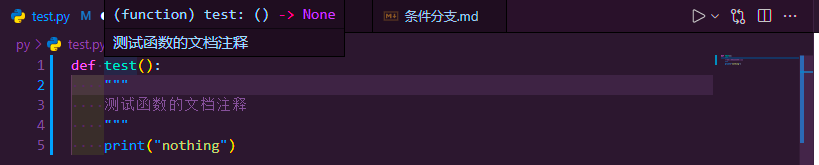

函数的使用
函数，在数学中就有封装的概念了
数学中的函数可以看作一个公式，一个用来计算多个数据的公式，用来处理重复的运算
编程中的函数可以看作一堆语句的结合，用来处理重复的动作(语句)
函数的使用包含了两个步骤： 封装 和 调用
自定义函数--封装
封装，把一些代码封装成一个个小的程序块，用于调用
自定义函数的代码语法如下：
def fac_name(args1="1",args2): print(args1,args2) pass "..."其中：
def 是单词define的缩写代表 定义
fec_name 是你的定义的函数名，本质上属于 标识符
args 参数，带等号的就是有默认值的参数；不带等号的必须在调用时进行参数添加
剩下的语句可以随意添加
调用函数--调用
调用自己定义的函数很简单
实例如下:
```python def show_99(statue):
if statue == True: for a in range(1,10,1): b = 1 line = "" while b <= a : line += ("%d x %d = %d " %(b,a,a*b)) b += 1 print(line)
show_99(statue=1)
```
要想调用一个函数，直接输入其函数名，再将必要的参数进行赋值 *(必要参数就是没有默认值的，如果参数都有默认值，不另外赋值也可)* 即可
推荐在调用时单独给每个形参赋值
***特别注意：由于python解释器逐条解释的原因，必须将`调用`写在`定义`之后***
***另外，解释器为了防止识别错误，规定在定义函数时，有默认值的参数必须置于无默认值的参数之后***
此外，定义时形参前加`*`表示多值参数(与拆包操作相同)
`*data`表示元组
`**data`表示字典
函数的文档注释
若想给函数添加注释，应在
def的下一行添加一个多行注释即可
tips：相对于其他语句，def的自定义函数快是一个相对独立的整体，应与其他非空行保持两行的间距
参数
```python def show_99(statue):
if statue == True: for a in range(1,10,1): b = 1 line = "" while b <= a : line += ("%d x %d = %d " %(b,a,a*b)) b += 1 print(line)
show_99(statue=1)
```
还是刚才的实例，由此引出两个概念**形参**和**实参**
- 形参：`def show_99(statue):`里面的`statue`就是形参
具体来说，形参就是**定义函数**时传递到函数内部的变量是形参
- 实参：`show_99(statue=1)`中的`statue=1`或者单独一个`1`就是实参
实参就是参数在**调用函数**时的具体表现值(实际数据)
返回值
返回值函数
return可以返回你的结果，结果可以是在函数中所得的所有值return函数是一个输入函数(类似于input)所以这个函数不会将生成的值输出到控制台中，但可以将其值输入给其他函数
实例：
def test(): """ 测试函数的文档注释 """ return "nothing" print(test())这样
test()就看做一个输入函数了注意：
return关键字后的代码将不会被执行